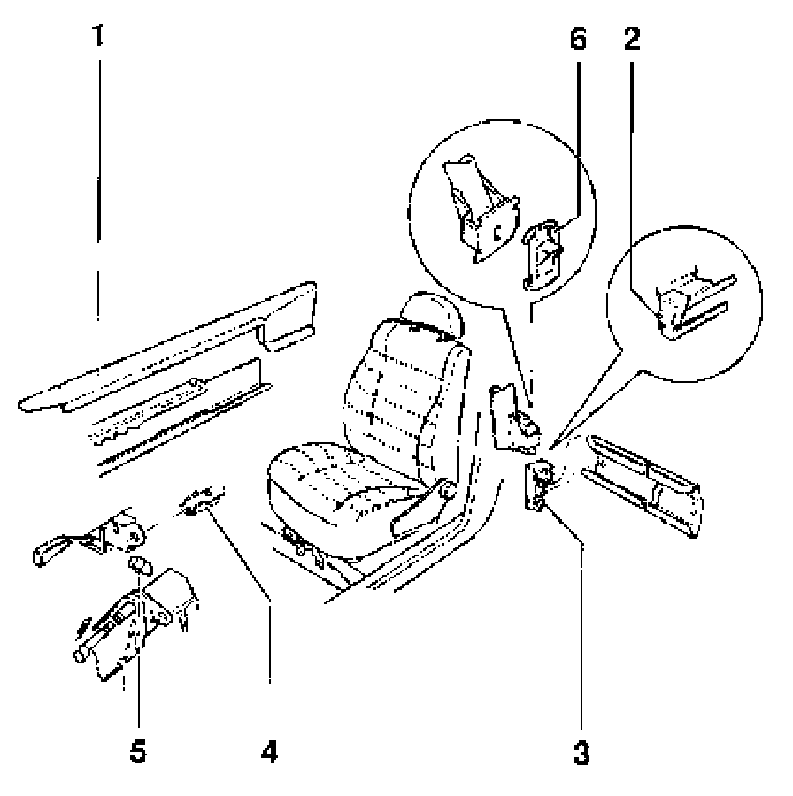

Front Seat, Remove and Install (Vehicles W/O Side Airbags)
Front seat, removing and installing (vehicles without side airbags)

WARNING!
Before working on the electrical system:
remove battery Ground (GND) strap.
Note:
- Depending on the type of equipment installed in vehicle, slight deviations must be taken into account when removing and installing.
- For seats with seat heating and side airbags, the battery must be disconnected and the cable connections must be disconnected before removing seaL.
- Before disconnecting battery, obtain radio anti theft code.
- After connecting battery, check vehicle equipment (radio, clock, electric window regulators) according to repair manual and/or owners manual.
Removing

- Remove trim strip -1 - from inner guide track toward rear.
- Remove wedge -2-on rear side of cap -3- using flat pliers and remove cap from outer guide tracks.
- Adjust seat forward, press securing clamp -4- together and remove.
- Slide seat rearward out of guide tracks.